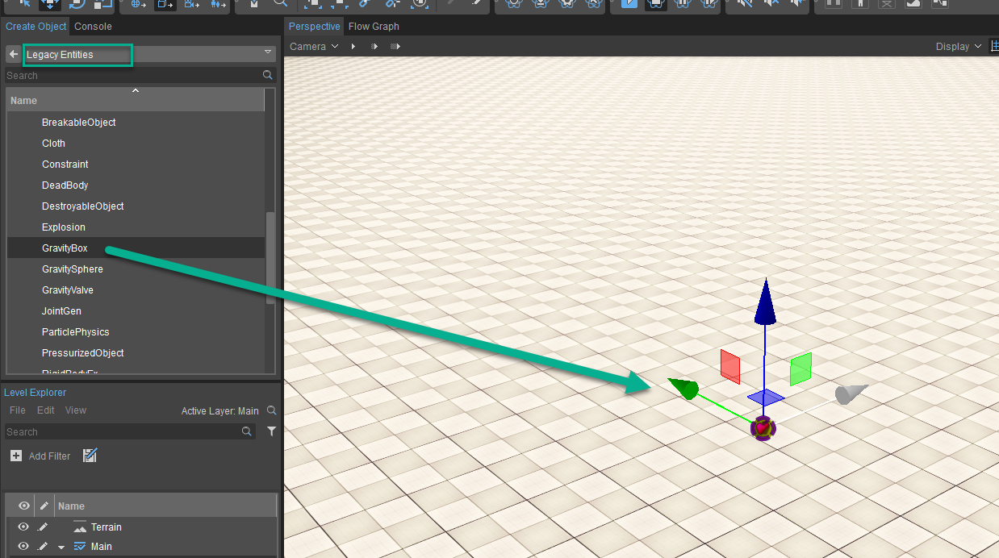

До этого урока в предыдущей главе мы экспериментировали с идеей использования плавучести, чтобы заставить определенные объекты float или, возможно, погрузиться в объем воды в вашей сцене. Теперь мы пойдем в другом направлении и создадим объекты float с другим объектом RigidBodyEx, прикрепленным к нижней части с помощью динамической веревки, как мы делали раньше.
Плавающие объекты в воздухе
Вам необходимо выполнить следующие шаги, указанные ниже, чтобы ваши объекты уплыли:
- Сначала перейдите в Create Object->Legacy Entities->Physics и возьмите Gravity Box, чтобы добавить его во вьюпорт и сцену.
- Затем, выбрав объект Gravity Box, мы хотим прокрутить вниз его свойства, чтобы отрегулировать гравитационное влияние. Видя, что мир по умолчанию установлен на -13, мы можем пойти дальше и изменить влияние Gravity Box на что-то до 100, чтобы увидеть эффекты нашего игрока, плавающего в пространстве.
- Наконец, мы попытаемся включать и выключать это, используя Flow Graph и запуская его с помощью переключателя внутри тома. Сначала нам нужно будет добавить 3 базовых объекта, а затем установить их массу 100 в объеме гравитационного ящика.
- Теперь, когда у нас есть объекты, расположенные, как показано ниже, мы постараемся добавить в сцену триггер, чтобы иметь возможность контролировать влияние блока при его включении.
Шаг 1
